Google Maps
Source: https://en.wikipedia.org/wiki/Google_Maps
Category: products_consumer
Depth: 1
Summary
Google Maps is a web mapping platform and consumer application developed by Google. It offers satellite imagery, aerial photography, street maps, 360° interactive panoramic views of streets, real-time traffic conditions, and route planning for traveling by foot, car, bike, and public transportation. As of 2020, Google Maps was being used by over one billion people every month around the world.
Images
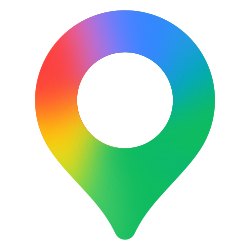
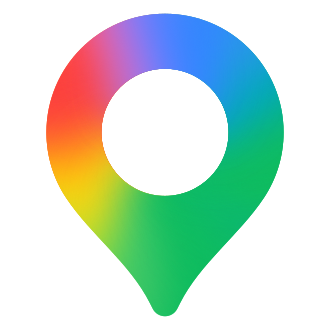
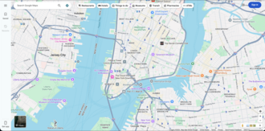
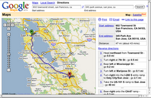
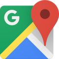
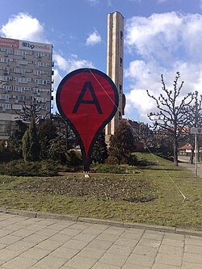
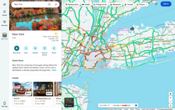
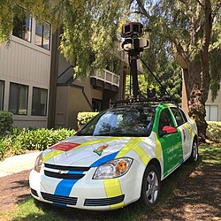
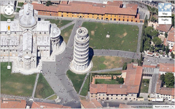
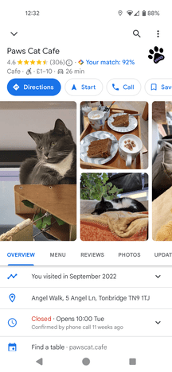
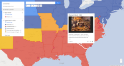
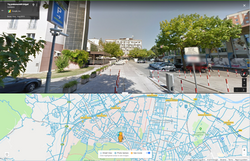
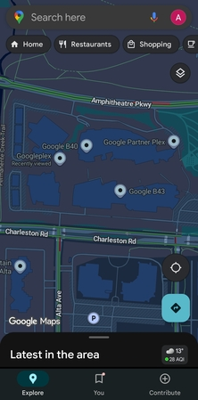
Full Article
Web mapping service
Google Maps is a web mapping platform and consumer application developed by Google. It offers satellite imagery, aerial photography, street maps, 360° interactive panoramic views of streets (Street View), real-time traffic conditions, and route planning for traveling by foot, car, bike, and public transportation. As of 2020[update], Google Maps was being used by over one billion people every month around the world.
Google Maps began as a C++ desktop program developed by brothers Lars and Jens Rasmussen, Stephen Ma and Noel Gordon in Australia at Where 2 Technologies. In October 2004, the company was acquired by Google, which converted it into a web application. After additional acquisitions of a geospatial data visualization company and a real-time traffic analyzer, Google Maps was launched in February 2005. The service's front end utilizes JavaScript, XML, and Ajax. Google Maps offers an API that allows maps to be embedded on third-party websites, and offers a locator for businesses and other organizations in numerous countries around the world. Google Map Maker allowed users to collaboratively expand and update the service's mapping worldwide but was discontinued from March 2017. However, crowdsourced contributions to Google Maps were not discontinued as the company announced those features would be transferred to the Google Local Guides program, although users that are not Local Guides can still contribute.
Google Maps's satellite view is a "top-down" or bird's-eye view; most of the high-resolution imagery of cities is aerial photography taken from aircraft flying at 800 to 1,500 feet (240 to 460 m), while most other imagery is from satellites. Much of the available satellite imagery is no more than three years old and is updated on a regular basis, according to a 2011 report. Google Maps previously used a variant of the Mercator projection, and therefore could not accurately show areas around the poles. In August 2018, the desktop version of Google Maps was updated to show a 3D globe. It is still possible to switch back to the 2D map in the settings.
Google Maps for mobile devices was first released in 2006; the latest versions feature GPS turn-by-turn navigation along with dedicated parking assistance features. By 2013, it was found to be the world's most popular smartphone app, with over 54% of global smartphone owners using it. In 2017, the app was reported to have two billion users on Android, along with several other Google services including YouTube, Chrome, Gmail, Search, and Google Play.
History
Acquisitions
Google Maps first started as a C++ program designed by two Danish brothers, Lars and Jens Eilstrup Rasmussen, and Noel Gordon and Stephen Ma, at the Sydney-based company Where 2 Technologies, which was founded in early 2003. The program was initially designed to be separately downloaded by users, but the company later pitched the idea for a purely Web-based product to Google management, changing the method of distribution. In October 2004, the company was acquired by Google Inc. where it transformed into the web application Google Maps. The Rasmussen brothers, Gordon and Ma joined Google at that time.
In the same month, Google acquired Keyhole, a geospatial data visualization company, whose marquee application suite, Earth Viewer, emerged as the Google Earth application in 2005 while other aspects of its core technology were integrated into Google Maps. In September 2004, Google acquired ZipDash, a company that provided real-time traffic analysis.
2005–2010
The launch of Google Maps was first announced on the Google Blog on February 8, 2005.
In September 2005, in the aftermath of Hurricane Katrina, Google Maps quickly updated its satellite imagery of New Orleans to allow users to view the extent of the flooding in various parts of that city.
In 2006, to address slow download speeds on mobile devices, engineer Sanjay Mavinkurve developed a method to reduce the color depth of map tiles, which reduced load times by 20 percent.
As of 2007, Google Maps was equipped with a miniature view with a draggable rectangle that denotes the area shown in the main viewport, and "Info windows" for previewing details about locations on maps. As of 2024, this feature had been removed (likely several years prior).
On November 28, 2007, Google Maps for Mobile 2.0 was released. It featured a beta version of a "My Location" feature, which uses the GPS / Assisted GPS location of the mobile device, if available, supplemented by determining the nearest wireless networks and cell sites. The software looks up the location of the cell site using a database of known wireless networks and sites. My Location determines a user's position by triangulating signal strengths against a database of cell transmitter locations.
Google Maps launched in India in 2008. On September 23, 2008, coinciding with the announcement of the first commercial Android device, Google announced that a Google Maps app had been released for its Android operating system.
In October 2009, Google replaced Tele Atlas as their primary supplier of geospatial data in the US version of Maps and used their own data.
2011–2015
On April 19, 2011, Map Maker was added to the American version of Google Maps, allowing any viewer to edit and add changes to Google Maps. This provides Google with local map updates almost in real-time instead of waiting for digital map data companies to release more infrequent updates.
On January 31, 2012, Google, due to offering its Maps for free, was found guilty of abusing the dominant position of its Google Maps application and ordered by a court to pay a fine and damages to Bottin Cartographer, a French mapping company. This ruling was overturned on appeal.
In June 2012, Google started mapping the UK's rivers and canals in partnership with the Canal and River Trust. The company has stated that "it would update the program during the year to allow users to plan trips which include locks, bridges and towpaths along the 2,000 miles of river paths in the UK."
In December 2012, the Google Maps application was separately made available in the App Store, after Apple removed it from its default installation of the mobile operating system version iOS 6 in September 2012.
On January 29, 2013, Google Maps was updated to include a map of North Korea. As of May 3, 2013[update], Google Maps recognizes Palestine as a country, instead of redirecting to the Palestinian territories.
In August 2013, Google Maps removed the Wikipedia Layer, which provided links to Wikipedia content about locations shown in Google Maps using Wikipedia geocodes.
On April 12, 2014, Google Maps was updated to reflect the annexation of Ukrainian Crimea by Russia. Crimea is shown as the Republic of Crimea in Russia and as the Autonomous Republic of Crimea in Ukraine. All other versions show a dotted disputed border.
In April 2015, on a map near the Pakistani city of Rawalpindi, the imagery of the Android logo urinating on the Apple logo was added via Map Maker and appeared on Google Maps. The vandalism was soon removed and Google publicly apologized. However, as a result, Google disabled user moderation on Map Maker, and on May 12, disabled editing worldwide until it could devise a new policy for approving edits and avoiding vandalism.
On April 29, 2015, users of the classic Google Maps were forwarded to the new Google Maps with the option to be removed from the interface.
On July 14, 2015, the Chinese name for Scarborough Shoal was removed after a petition from the Philippines was posted on Change.org.
2016–2018
On June 27, 2016, Google rolled out new satellite imagery worldwide sourced from Landsat 8, comprising over 700 trillion pixels of new data. In September 2016, Google Maps acquired mapping analytics startup Urban Engines.
In 2016, the Government of South Korea offered Google conditional access to the country's geographic database – access that already allows indigenous Korean mapping providers high-detail maps. Google declined the offer, as it was unwilling to accept restrictions on reducing the quality around locations the South Korean Government felt were sensitive (see restrictions on geographic data in South Korea).
On October 16, 2017, Google Maps was updated with accessible imagery of several planets and moons such as Titan, Mercury, and Venus, as well as direct access to imagery of the Moon and Mars.
In May 2018, Google announced major changes to the API structure starting June 11, 2018. This change consolidated the 18 different endpoints into three services and merged the basic and premium plans into one pay-as-you-go plan. This meant a 1400% price raise for users on the basic plan, with only six weeks of notice. This caused a harsh reaction within the developers community. In June, Google postponed the change date to July 16, 2018.
In August 2018, Google Maps designed its overall view (when zoomed out completely) into a 3D globe, dropping[disputed – discuss] the Mercator projection that projected the planet onto a flat surface.
2019–present
In January 2019, Google Maps added speed trap and speed camera alerts as reported by other users.
On October 17, 2019, Google Maps was updated to include incident reporting, resembling a functionality in Waze which was acquired by Google in 2013.
In December 2019, Incognito mode was added, allowing users to enter destinations without saving entries to their Google accounts.
In February 2020, Maps received a 15th anniversary redesign. It notably added a brand-new app icon, which now resembles the original icon in 2005.
On September 23, 2020, Google announced a COVID-19 Layer update for Google Maps, which is designed to offer a seven-day average data of the total COVID-19-positive cases per 100,000 people in the area selected on the map. It also features a label indicating the rise and fall in the number of cases.
In January 2021, Google announced that it would be launching a new feature displaying COVID-19 vaccination sites.
In January 2021, Google announced updates to the route planner that would accommodate drivers of electric vehicles. Routing would take into account the type of vehicle, vehicle status including current charge, and the locations of charging stations.
In June 2022, Google Maps added a layer displaying air quality for certain countries.
In September 2022, Google removed the COVID-19 Layer from Google Maps due to lack of usage of the feature.
In February 2026, South Korea allowed Google to export map data at 1:5,000-scale under security conditions after attempts in 2007, 2016, and 2025. The government compromised on its previous demands, finally allowing more detailed navigation to be included.
Functionality
Directions and transit
Google Maps provides a route planner, allowing users to find available directions through driving, public transportation, walking, or biking. Google has partnered globally with over 800 public transportation providers to adopt GTFS (General Transit Feed Specification), making the data available to third parties. The app can indicate users' transit route, thanks to an October 2019 update. The incognito mode, eyes-free walking navigation features were released earlier. A July 2020 update provided bike share routes.
In February 2024, Google Maps started rolling out glanceable directions for its Android and iOS apps. The feature allows users to track their journey from their device's lock screen.
Traffic conditions
In 2007, Google began offering traffic data as a colored overlay on top of roads and motorways to represent the speed of vehicles on particular roads. Crowdsourcing is used to obtain the GPS-determined locations of a large number of cellphone users, from which live traffic maps are produced.
Google has stated that the speed and location information it collects to calculate traffic conditions is anonymous. Options available in each phone's settings allow users not to share information about their location with Google Maps. Google stated, "Once you disable or opt out of My Location, Maps will not continue to send radio information back to Google servers to determine your handset's approximate location".[failed verification]
Street View
Main article: Google Street View
On May 25, 2007, Google released Google Street View, a feature of Google Maps providing 360° panoramic street-level views of various locations. On the date of release, the feature only included five cities in the U.S. It has since expanded to thousands of locations around the world. In July 2009, Google began mapping college campuses and surrounding paths and trails.
Street View garnered much controversy after its release because of privacy concerns about the uncensored nature of the panoramic photographs, although the views are only taken on public streets. Since then, Google has blurred faces and license plates through automated facial recognition.
In late 2014, Google launched Google Underwater Street View, including 2,300 kilometres (1,400 mi) of the Australian Great Barrier Reef in 3D. The images are taken by special cameras which turn 360 degrees and take shots every 3 seconds.
In 2017, in both Google Maps and Google Earth, Street View navigation of the International Space Station interior spaces became available.
3D imagery
Main article: Google Earth § 3D imagery
Google Maps incorporated, in August 2018, 3D models of hundreds of cities in over 40 countries from Google Earth into its satellite view. The models were developed using aerial photogrammetry techniques.
Immersive View
At the I/O 2022 event, Google announced Immersive View, a feature of Google Maps which would involve composite 3D images generated from Street View and aerial images of locations using AI, complete with synchronous information. It was to be initially in five cities worldwide, with plans to add it to other cities later on. The feature was previewed in September 2022 with 250 photorealistic aerial 3D images of landmarks, and was full launched in February 2023. An expansion of Immersive View to routes was announced at Google I/O 2023, and was launched in October 2023 for 15 cities globally.
The feature uses predictive modelling and neural radiance fields to scan Street View and aerial images to generate composite 3D imagery of locations, including both exteriors and interiors, and routes, including driving, walking or cycling, as well as generate synchronous information and forecasts up to a month ahead from historical and environmental data about both such as weather, traffic and busyness.
Immersive View has been available in the following locations:[citation needed]
Locations with Immersive View
Landmark Icons
Google added icons of city attractions, in a similar style to Apple Maps, on October 3, 2019. In the first stage, such icons were added to 9 cities.
45° imagery
In December 2009, Google introduced a new view consisting of 45° angle aerial imagery, offering a "bird's-eye view" of cities. The first cities available were San Jose and San Diego. This feature was initially available only to developers via the Google Maps API. In February 2010, it was introduced as an experimental feature in Google Maps Labs. In July 2010, 45° imagery was made available in Google Maps in select cities in South Africa, the United States, Germany and Italy.
Weather
In February 2024, Google Maps incorporated a small weather icon on the top left corner of the Android and iOS mobile apps, giving access to weather and air quality index details.
Lens in Maps
Previously called Search with Live View, Lens In Maps identifies shops, restaurants, transit stations and other street features with a phone's camera and places relevant information and a category pin on top, like closing/opening times, current busyness, pricing and reviews using AI and augmented reality. The feature, if available on the device, can be accessed through tapping the Lens icon in the search bar. It was expanded to 50 new cities in October 2023 in its biggest expansion yet, after initially being released in late 2022 in Los Angeles, San Francisco, New York, London, and Paris. Lens in Maps shares features with Live View, which also displays information relating to street features while guiding a user to a selected destination with virtual arrows, signs and guidance.
Business listings
Google collates business listings from multiple on-line and off-line sources. To reduce duplication in the index, Google's algorithm combines listings automatically based on address, phone number, or geocode, but sometimes information for separate businesses will be inadvertently merged with each other, resulting in listings inaccurately incorporating elements from multiple businesses. Google allows business owners to create and verify their own business data through Google Business Profile (GBP), formerly Google My Business (GMB). Owners are encouraged to provide Google with business information including address, phone number, business category, and photos. Google has staff in India who check and correct listings remotely as well as support businesses with issues.[citation needed] Google also has teams on the ground in most countries that validate physical addresses in person. In May 2024, Google announced it would discontinue the chat feature in Google Business Profile. Starting July 15, 2024, new chat conversations would be disabled, and by July 31, 2024, all chat functionalities would end.
Google Maps can be manipulated by businesses that are not physically located in the area in which they record a listing. There are cases of people abusing Google Maps to overtake their competition by placing unverified listings on online directory sites, knowing the information will roll across to Google (duplicate sites). The people who update these listings do not use a registered business name. They place keywords and location details on their Google Maps business title, which can overtake credible business listings. In Australia in particular, genuine companies and businesses are noticing a trend of fake business listings in a variety of industries.
Genuine business owners can also optimize their business listings to gain greater visibility in Google Maps, through a type of search engine marketing called local search engine optimization.
Indoor maps
In March 2011, indoor maps were added to Google Maps, giving users the ability to navigate themselves within buildings such as airports, museums, shopping malls, big-box stores, universities, transit stations, and other public spaces (including underground facilities). Google encourages owners of public facilities to submit floor plans of their buildings in order to add them to the service. Map users can view different floors of a building or subway station by clicking on a level selector that is displayed near any structures which are mapped on multiple levels.
My Maps
My Maps is a feature in Google Maps launched in April 2007 that enables users to create custom maps for personal use or sharing. Users can add points, lines, shapes, notes and images on top of Google Maps using a WYSIWYG editor. An Android app for My Maps, initially released in March 2013 under the name Google Maps Engine Lite, was available until its removal from the Play Store in October 2021.
Google Local Guides
Google Local Guides is a volunteer program launched by Google Maps to enable users to contribute to Google Maps when registered. It sometimes provides them additional perks and benefits for their collaboration. Users can achieve Level 1 to 10, and be awarded with badges. The program is partially a successor to Google Map Maker as features from the former program became integrated into the website and app.
The program consists of adding reviews, photos, basic information, and videos; and correcting information such as wheelchair accessibility. Adding reviews, photos, videos, new places, new roads or providing useful information gives points to the users. The level of users is upgraded when they get a certain amount of points. Starting with Level 4, a star is shown near the avatar of the user.
Timelapse
Earth Timelapse, released in April 2021, is a program in which users can see how the earth has been changed in the last 37 years. They combined the 15 million satellite images (roughly ten quadrillion pixels) to create the 35 global cloud-free Images for this program.
Timeline
If a user shares their location with Google, Timeline summarises this location for each day on a Timeline map. Timeline estimates the mode of travel used to move between places and will also show photos taken at that location. In June 2024, Google started progressively removing access to the timeline on web browsers, with the information instead being stored on a local device.
Implementation
As the user drags the map, the grid squares are downloaded from the server and inserted into the page. When a user searches for a business, the results are downloaded in the background for insertion into the side panel and map; the page is not reloaded. A hidden iframe with form submission is used because it preserves browser history. Like many other Google web applications, Google Maps uses JavaScript extensively. The site also uses protocol buffers for data transfer rather than JSON, for performance reasons.
The version of Google Street View for classic Google Maps required Adobe Flash. In October 2011, Google announced MapsGL, a WebGL version of Maps with better renderings and smoother transitions. Indoor maps use JPG, .PNG, .PDF, .BMP, or .GIF, for floor plans.
Users who are logged into a Google Account can save locations so that they are overlaid on the map with various colored "pins" whenever they browse the application. These "Saved places" can be organized into default groups or user named groups and shared with other users. "Starred places" is one default group example. It previously automatically created a record within the now-discontinued product Google Bookmarks.
Map data and imagery
See also: List of satellite map images with missing or unclear data
The Google Maps terms and conditions state that usage of material from Google Maps is regulated by Google Terms of Service and some additional restrictions. Google has either purchased local map data from established companies, or has entered into lease agreements to use copyrighted map data. The owner of the copyright is listed at the bottom of zoomed maps. For example, street maps in Japan are leased from Zenrin. Street maps in China are leased from AutoNavi. Russian street maps are leased from Geocentre Consulting and Tele Atlas. Data for North Korea is sourced from the companion project Google Map Maker.
Street map overlays, in some areas, may not match up precisely with the corresponding satellite images. The street data may be entirely erroneous, or simply out of date: "The biggest challenge is the currency of data, the authenticity of data," said Google Earth representative Brian McClendon. As a result, in March 2008 Google added a feature to edit the locations of houses and businesses.
Restrictions have been placed on Google Maps through the apparent censoring of locations deemed potential security threats. In some cases the area of redaction is for specific buildings, but in other cases, such as Washington, D.C., the restriction is to use outdated imagery.
Google Maps API
Google Maps API, now called Google Maps Platform, hosts about 17 different APIs, which are themed under the following categories: Maps, Places and Routes.
After the success of reverse-engineered mashups such as chicagocrime.org and housingmaps.com, Google launched the Google Maps API in June 2005 to allow developers to integrate Google Maps into their websites. It was a free service that did not require an API key until June 2018 (changes went into effect on July 16), when it was announced that an API key linked to a Google Cloud account with billing enabled would be required to access the API. The API currently[update] does not contain ads, but Google states in their terms of use that they reserve the right to display ads in the future.
By using the Google Maps API, it is possible to embed Google Maps into an external website, onto which site-specific data can be overlaid. Although initially only a JavaScript API, the Maps API was expanded to include an API for Adobe Flash applications (but this has been deprecated), a service for retrieving static map images, and web services for performing geocoding, generating driving directions, and obtaining elevation profiles. Over 1,000,000 web sites use the Google Maps API, making it the most heavily used web application development API. In September 2011, Google announced it would deprecate the Google Maps API for Flash.
The Google Maps API was free for commercial use, provided that the site on which it is being used is publicly accessible and did not charge for access, and was not generating more than 25,000 map accesses a day. Sites that did not meet these requirements could purchase the Google Maps API for Business.
As of June 21, 2018, Google increased the prices of the Maps API and requires a billing profile.
Google Maps in China
Due to restrictions on geographic data in China, Google Maps must partner with a Chinese digital map provider in order to legally show Chinese map data. Since 2006, this partner has been AutoNavi.
Within China, the State Council mandates that all maps of China use the GCJ-02 coordinate system, which is offset from the WGS-84 system used in most of the world. google.cn/maps (formerly Google Ditu) uses the GCJ-02 system for both its street maps and satellite imagery. google.com/maps also uses GCJ-02 data for the street map, but uses WGS-84 coordinates for satellite imagery, causing the so-called China GPS shift problem.
Frontier alignments also present some differences between google.cn/maps and google.com/maps. On the latter, sections of the Chinese border with India and Pakistan are shown with dotted lines, indicating areas or frontiers in dispute. However, google.cn shows the Chinese frontier strictly according to Chinese claims with no dotted lines indicating the border with India and Pakistan. For example, the South Tibet region claimed by China but administered by India as a large part of Arunachal Pradesh is shown inside the Chinese frontier by google.cn, with Indian highways ending abruptly at the Chinese claim line. Google.cn also shows Taiwan and the South China Sea Islands as part of China. Google Ditu's street map coverage of Taiwan no longer omits major state organs, such as the Presidential Palace, the five Yuans, and the Supreme Court.[additional citation(s) needed]
Google.cn/maps does not provide My Maps. On the other hand, while google.cn displays virtually all text in Chinese, google.com/maps displays most text (user-selectable real text as well as those on map) in English.[citation needed] This behavior of displaying English text is not consistent but intermittent – sometimes it is in English, sometimes it is in Chinese. The criteria for choosing which language is displayed are not known publicly.[citation needed]
Criticism and controversies
Incorrect location naming
There are cases where Google Maps had added out-of-date neighborhood monikers. Thus, in Los Angeles, the name "Brooklyn Heights" was revived from its 1870s usage and "Silver Lake Heights" from its 1920s usage, or mistakenly relabeled areas (in Detroit, the neighborhood "Fiskhorn" became "Fishkorn"). Because many companies utilize Google Maps data, these previously obscure or incorrect names then gain traction; the names are often used by realtors, hotels, food delivery sites, dating sites, and news organizations.
Google has said it created its maps from third-party data, public sources, satellites, and users, but many names used have not been connected to any official record. According to a former Google Maps employee (who was not authorized to speak publicly), users can submit changes to Google Maps, but some submissions are ruled upon by people with little local knowledge of a place, such as contractors in India. Critics maintain that names likes "BoCoCa" (for the area in Brooklyn between Boerum Hill, Cobble Hill and Carroll Gardens), are "just plain puzzling" or simply made up. Some names used by Google have been traced to non-professionally made maps with typographical errors that survived on Google Maps.
Potential misuse
See also: Google Street View privacy concerns and List of satellite map images with missing or unclear data
In 2005 the Australian Nuclear Science and Technology Organisation (ANSTO) complained about the potential for terrorists to use the satellite images in planning attacks, with specific reference to the Lucas Heights nuclear reactor; however, the Australian Federal government did not support the organization's concern. At the time of the ANSTO complaint, Google had colored over some areas for security (mostly in the U.S.), such as the rooftop of the White House and several other Washington, D.C. buildings.
In October 2010, Nicaraguan military commander Edén Pastora stationed Nicaraguan troops on the Isla Calero (in the delta of the San Juan River), justifying his action on the border delineation given by Google Maps. Google has since updated its data which it found to be incorrect.
On January 27, 2014, documents leaked by Edward Snowden revealed that the NSA and the GCHQ intercepted Google Maps queries made on smartphones, and used them to locate the users making these queries. One leaked document, dating to 2008, stated that "[i]t effectively means that anyone using Google Maps on a smartphone is working in support of a GCHQ system."
In May 2015, searches on Google Maps for offensive racial epithets for African Americans pointed the user to the White House; Google apologized for the incident.
In December 2015, 3 Japanese netizens were charged with vandalism after they were found to have added an unrelated law firm's name as well as indecent names to locations such as "Nuclear test site" to the Atomic Bomb Dome and "Izumo Satya" to the Izumo Taisha.
In February 2020, the artist Simon Weckert used 99 cell phones to fake a Google Maps traffic jam.
In September 2024, several schools in Taiwan and Hong Kong were altered to incorrect labels, such as "psychiatric hospitals" or "prisons". Initially, it was believed to be the result of hacker attacks. However, police later revealed that local students had carried out the prank. Google quickly corrected the mislabeled entries. Education officials in Taiwan and Hong Kong expressed concern over the incident.
Misdirection incidents
Argentina
In May 2025, a Brazilian tourist driving from Perito Moreno to El Calafate walked 25 kilometres (16 mi) on foot during a snowstorm after Google Maps directed him to an unpaved section of Santa Cruz's 29 highway where his car got stranded. He was rescued by local police after walking for five hours in freezing weather.
Australia
In August 2023, a woman driving from Alice Springs to the Harts Range Racecourse was stranded in the Central Australian desert for a night after following directions provided by Google Maps. She later discovered that Google Maps was providing directions for the actual Harts Range instead of the rodeo. Google said it was looking into the naming of the two locations and consulting with "local and authoritative sources" to solve the issue.
In February 2024, two German tourists were stranded for a week after Google Maps directed them to follow a dirt track through Oyala Thumotang National Park and their vehicle became trapped in mud. Queensland Parks and Wildlife Service ranger Roger James said, "People should not trust Google Maps when they're travelling in remote regions of Queensland and they need to follow the signs, use official maps or other navigational devices."
India
Google Maps has been linked to several misdirection incidents in India in 2024. In 2024, three men from Uttar Pradesh died after their car fell from an under-construction bridge. They were using Google Maps for driving which misdirected them and the car fell into the Ramganga river. The bridge had no warning signs or barricades in place at the time of the incident. Engineers from the state's road department and a Google Maps official were identified in a police complaint on charges related to the case.
North America
In June 2019, Google Maps provided nearly 100 Colorado drivers an alternative route that led to a dirt road after a crash occurred on Peña Boulevard. The road had been turned to mud by rain, resulting in nearly 100 vehicles being trapped. Google said in a statement, "While we always work to provide the best directions, issues can arise due to unforeseen circumstances such as weather. We encourage all drivers to follow local laws, stay attentive, and use their best judgment while driving."
In September 2023, Google was sued by a North Carolina resident who alleged that Google Maps had directed her husband over the Snow Creek Bridge in Hickory the year prior, resulting in him drowning. According to the lawsuit, multiple people had notified Google about the state of the bridge, which collapsed in 2013, but Google had not updated the route information and continued to direct users over the bridge. At the time of the man's death, the barriers placed to block access to the bridge had been vandalized.
In November 2023, a hiker was rescued by helicopter on the backside of Mount Fromme in Vancouver. North Shore Rescue stated on its Facebook page that the hiker had followed a non-existent hiking trail on Google Maps. This was also the second hiker in two months to require rescuing after following the same trail. The fake trail has since been removed from the app.
Also in November 2023, Google apologized after users were directed through desert roads after parts of Interstate 15 were closed due to a dust storm. Drivers became stranded after following the suggested detour route, which was a "bumpy dirt trail". Following the incident, Google stated that Google Maps would "no longer route drivers traveling between Las Vegas and Barstow down through those roads."
Russia
In December 2020, Sergey Ustinov, a motorist teenager, froze to death when his Toyota Chaser's radiator malfunctioned on an abandoned section of the Kolyma Highway between Kyubeme and Agayakan, close to the coldest permanent inhabited place on Earth. His passenger, Vladislav Istomin, was found alive but with serious frostbite after the pair initially tried to make a fire of tires but failed while the temperature outside hit -50°C.
Google Maps was found accountable for redirecting the pair to the abandoned road, part of a 200 kms shorter route than the normal one between Yakutsk and Magadan, the start and end point of the two.
Labelling disputes
In February 2025, Google said that it would change all parks labelled "state parks" in Canada to "provincial parks". This issue predated the Trump administration but gained attention after Trump stated that he would like Canada to become the 51st state. The "state park" listing was criticized by Canadians, including British Columbia environment minister Tamara Davidson.
Naming disputes
In 2012, BBC News reported that Google was facing potential legal action from Iran for its lack of a naming label for the Persian Gulf on Google Maps. The body of water was not labelled on the map; Iran said Google would see "serious damages" if the gulf was not named on the map. The gulf is the subject of a naming dispute. Since 2016, Google Maps has displayed both Persian Gulf and Arabian Gulf on the body of water and shows "either Arabian or Persian Gulf to local users, depending on geolocation and language settings."
In February 2025, as a response to Donald Trump's Executive Order 14172, the Gulf of Mexico was relabeled to "Gulf of America" for US users and "Gulf of Mexico (Gulf of America)" elsewhere, except for Mexico itself where it remained the Gulf of Mexico. The decision received criticism, with Mexican president Claudia Sheinbaum asking Google to reconsider its decision, and stating that her government would not rule out filing a civil lawsuit against Google. Google subsequently disabled user reviews of the gulf after the name change occurred; BBC News reported that "Google appears to have deleted some negative reviews left in the wake of its name change." In May 2025, Sheinbaum said a lawsuit had been filed against Google for its continued use of "Gulf of America" on Google Maps.
In April 2025, an update was released for Google Maps that more explicitly displayed the "West Philippine Sea" label for parts of the South China Sea claimed by the Philippines. The decision was praised by Filipino officials but criticized by the Chinese Foreign Ministry. A Google spokesperson stated, "The West Philippine Sea has always been labeled on Google Maps. We recently made this label easier to see at additional zoom levels."
Palestine labeling controversy
Google Maps has been criticized for not labelling Palestine as a country. When users search for "Palestine", the name is not visible as a labeled entity on the map, while its neighboring states are shown. In 2016, in response to an accusation that it deleted Palestine from the maps, the company explained that they have never labelled Palestine on their maps and also that a temporary "bug" had removed the labels for the West Bank and the Gaza Strip. Google also claimed the reason they do not label Palestine is due to the territory and its boundaries still being disputed. However critics have pointed out that Google Maps shows the Western Sahara, despite that terrority also being part of a long-running dispute, and arguing that Google demonstrates an inconsistent approach to disputed territories. Despite Google's explanation, backlash continued over the omission and in 2020, the controversy led to a Change.org petition to prompt Google to add Palestine to Google Maps, which has over 2.1 million signatures.
Discontinued features
Google Latitude
Main article: Google Latitude
Google Latitude was a feature that let users share their physical locations with other people. This service was based on Google Maps, specifically on mobile devices. There was an iGoogle widget for desktops and laptops as well. Some concerns were expressed about the privacy issues raised by the use of the service. On August 9, 2013, this service was discontinued, and on March 22, 2017, Google incorporated the features from Latitude into the Google Maps app.
Google Map Maker
Main article: Google Map Maker
In areas where Google Map Maker was available, for example, much of Asia, Africa, Latin America and Europe as well as the United States and Canada, anyone who logged into their Google account could directly improve the map by fixing incorrect driving directions, adding biking trails, or adding a missing building or road. General map errors in Australia, Austria, Belgium, Denmark, France, Liechtenstein, Netherlands, New Zealand, Norway, South Africa, Switzerland, and the United States could be reported using the Report a Problem link in Google Maps and would be updated by Google. For areas where Google used Tele Atlas data, map errors could be reported using Tele Atlas map insight.
If imagery was missing, outdated, misaligned, or generally incorrect, one could notify Google through their contact request form.
In November 2016, Google announced the discontinuation of Google Map Maker as of March 2017.
Mobile app
Google Maps is available as a mobile app for the Android and iOS mobile operating systems. The first mobile version of Google Maps (then known as Google Local for Mobile) was launched in beta in November 2005 for mobile platforms supporting J2ME. It was released as Google Maps for Mobile in 2006. In 2007 it came preloaded on the first iPhone in a deal with Apple. A version specifically for Windows Mobile was released in February 2007 and the Symbian app was released in November 2007.
Version 2.0 of Google Maps Mobile was announced at the end of 2007, with a stand out My Location feature to find the user's location using the cell towers, without needing GPS. In September 2008, Google Maps was released for and preloaded on Google's own new platform Android.
Up until iOS 6, the built-in maps application on the iOS operating system was powered by Google Maps. However, with the announcement of iOS 6 in June 2012, Apple announced that they had created their own Apple Maps mapping service, which officially replaced Google Maps when iOS 6 was released on September 19, 2012. However, at launch, Apple Maps received significant criticism from users due to inaccuracies, errors and bugs. One day later, The Guardian reported that Google was preparing its own Google Maps app, which was released on December 12, 2012. Within two days, the application had been downloaded over ten million times.
Features
The Google Maps apps for iOS and Android have many of the same features, including turn-by-turn navigation, street view, and public transit information. Turn-by-turn navigation was originally announced by Google as a separate beta testing app exclusive to Android 2.0 devices in October 2009. The original standalone iOS version did not support the iPad, but tablet support was added with version 2.0 in July 2013. An update in June 2012 for Android devices added support for offline access to downloaded maps of certain regions, a feature that was eventually released for iOS devices, and made more robust on Android, in May 2014. Google Maps is getting a new Gemini upgrade that has hands-free, that is not available in Google Assistant. It makes navigating easier and smarter. Its required version is iOS 15 or Android 9 “Pie” for intergration.
At the end of 2015 Google Maps announced its new offline functionality, but with various limitations – downloaded area cannot exceed 120,000 square kilometers and require a considerable amount of storage space. In January 2017, Google added a feature exclusively to Android that will, in some U.S. cities, indicate the level of difficulty in finding available parking spots, and on both Android and iOS, the app can, as of an April 2017 update, remember where users parked. In August 2017, Google Maps for Android was updated with new functionality to actively help the user in finding parking lots and garages close to a destination. In December 2017, Google added a new two-wheeler mode to its Android app, designed for users in India, allowing for more accessibility in traffic conditions. In 2019 the Android version introduced the new feature called live view that allows to view directions directly on the road thanks to augmented reality. Google Maps won the 2020 Webby Award for Best User Interface in the category Apps, Mobile & Voice. In March 2021, Google added a feature in which users can draw missing roads. In June 2022, Google implemented support for toll calculation. Both iOS and Android apps report how much the user has to pay in tolls when a route that includes toll roads is input. The feature is available for roads in the US, India, Japan and Indonesia with further expansion planned. As per reports the total number of toll roads covered in this phase is around 2000.
Reception
USA Today welcomed the application back to iOS, saying: "The reemergence in the middle of the night of a Google Maps app for the iPhone is like the return of an old friend. Only your friend, who'd gone missing for three months, comes back looking better than ever." Jason Parker of CNET, calling it "the king of maps", said, "With its iOS Maps app, Google sets the standard for what mobile navigation should be and more." Bree Fowler of the Associated Press compared Google's and Apple's map applications, saying: "The one clear advantage that Apple has is style. Like Apple devices, the maps are clean and clear and have a fun, pretty element to them, especially in 3-D. But when it comes down to depth and information, Google still reigns superior and will no doubt be welcomed back by its fans." Gizmodo gave it a ranking of 4.5 stars, stating: "Maps Done Right". According to The New York Times, Google "admits that it's [iOS app is] even better than Google Maps for Android phones, which has accommodated its evolving feature set mainly by piling on menus".
Google Maps' location tracking is regarded by some as a threat to users' privacy, with Dylan Tweney of VentureBeat writing in August 2014 that "Google is probably logging your location, step by step, via Google Maps", and linked users to Google's location history map, which "lets you see the path you've traced for any given day that your smartphone has been running Google Maps". Tweney then provided instructions on how to disable location history. The history tracking was also noticed, and recommended disabled, by editors at CNET and TechCrunch. Additionally, Quartz reported in April 2014 that a "sneaky new privacy change" would have an effect on the majority of iOS users. The privacy change, an update to the Gmail iOS app that "now supports sign-in across Google iOS apps, including Maps, Drive, YouTube and Chrome", meant that Google would be able to identify users' actions across its different apps.
The Android version of the app surpassed five billion installations in March 2019. By November 2021, the Android app had surpassed 10 billion installations.
Go version
Google Maps Go, a version of the app designed for lower-end devices, was released in beta in January 2018. By September 2018, the app had over 10 million installations.
Artistic and literary uses
The German "geo-novel" Senghor on the Rocks (2008) presents its story as a series of spreads showing a Google Maps location on the left and the story's text on the right. Annika Richterich explains that the "satellite pictures in Senghor on the Rocks illustrate the main character's travel through the West-African state of Senegal".
Artists have used Google Street View in a range of ways. Emilio Vavarella's The Google Trilogy includes glitchy images and unintended portraits of the drivers of the Street View cars. The Japanese band group_inou used Google Street View backgrounds to make a music video for their song EYE. The Canadian band Arcade Fire made a customized music video that used Street View to show the viewer their own childhood home.
See also
- Apple Maps
- Bing Maps
- Comparison of web map services
- GeoGuessr
- Here WeGo
- MapQuest
- OpenStreetMap
- Organic Maps
- Terravision
- Wikiloc, a mashup that shows trails and waypoints on Google Maps
- Wikimapia, a mashup combining Google Maps and a wiki aimed at "describing the whole planet earth"
- Yandex Maps, popular in Russia and CIS
Notes
References
External links
- Official website
- Official Google Maps blog
- About Google Maps
- Google Local Guides
- Google Maps Platform
| - v - t - e Google Maps | ||
|---|---|---|
| Related products | - Waze - Arts & Culture | |
| Views and mapping sites | - Earth - Street View | |
| Street View | ||
| Other | - Historypin - Google Maps pin - Google Maps Road Trip - Argleton |
| Links to related articles | |
|---|---|
| - v - t - e Google |
| Authority control databases Edit this at Wikidata | |
|---|---|
| International | - VIAF - GND - FAST |
| National | - United States - France - BnF data - Israel |
| Other | - IdRef |